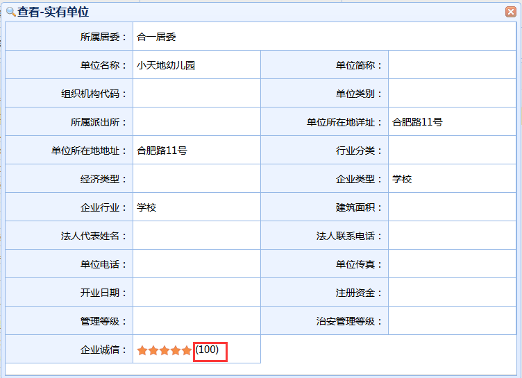

|
操作指南：
1、新增：点击“新增”按钮，随后会跳出实有单位新增的页面；
单位所在地址选择：点击“单位所在地地址”旁的搜索按钮进入地址信息选择页面，点击“查询”按钮可根据以下条件查询所需地址。勾选地址信息后点击“确认”按钮。
信息填写完成后，点击“保存”按钮进行实有单位信息的保存，操作完成返回列表页面。
2、修改：勾选一条记录后，点击“修改”按钮，随后会跳出实有单位修改的页面；
修改界面会显示您所选中那条记录的相应数据
单位所在地址选择：点击“单位所在地地址”旁的搜索按钮进入地址信息选择页面，点击“查询”按钮可根据以下条件查询所需地址。勾选地址信息后点击“选定”按钮。
信息填写完成后，点击“保存”按钮进行实有单位信息的保存，操作完成返回列表页面。
3、删除：勾选一条记录后，点击“删除”按钮，可删除该条实有单位信息；
查看：勾选一条记录后，点击“查看”按钮，可查看该条实有单位的具体信息

点击企业诚信的数值，会跳转到对应的实有单位诚信界面，此界面的操作同“诚信”操作。
4、诚信：勾选一条记录后，点击“诚信”按钮，随后会跳出修改实有单位诚信的页面；
修改实有单位诚信界面会显示您所选中那条记录的相应数据
勾选一条评估记录，点击“删除”按钮可删除该条评估记录信息。
信息填写完成后，点击“保存”按钮进行楼宇信息的保存，操作完成返回列表页面。
|